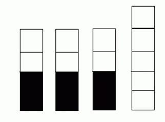

第一行T表示数据组数
对于每组数据，第一行n1 n2 n3表示三座塔的高度
接下来一行n1个字符，从下到上描述，B表示黑色砖块，W表示白色砖块
接下来两行类似的描述与
接下来类似的四行描述
注意，当n=0时对应行是一个空行
黑白游戏是一个双人游戏，黑方和白方轮流操作。一开始有四座塔，每座塔由一列若干个黑色或白色的砖块搭成（可能为空）。轮到一方操作时，该方可以选择某座塔中的某个与其颜色对应的砖块，将该砖块及其上面的砖块全部移去。若某方无法操作，则该方输掉游戏。
对于一个状态，若白方无论先手还是后手均必胜则称其为W状态。比如如图四座塔，考虑白方先手，黑方前两步必定操作两个不同的塔的第2个黑色砖块，假设是第一座与第二座，则白方只需操作第三座塔的两个白色砖块，然后剩下5个白色砖块与4个黑色砖块，双方轮流取，显然白方必胜。若白方后手同理易知其必胜。故该状态是一个W状态。

Your Task
给定三座塔与另外三座塔，请判断是否对于任意的一座塔C，若状态是W状态则状态也是W状态。
第一行T表示数据组数
对于每组数据，第一行n1 n2 n3表示三座塔的高度
接下来一行n1个字符，从下到上描述，B表示黑色砖块，W表示白色砖块
接下来两行类似的描述与
接下来类似的四行描述
注意，当n=0时对应行是一个空行
对于每组数据，如果前面的条件满足则输出“Yes”否则输出“No”
3
3 3 1
W B B
W B W
B
3 3 3
B W W
B W W
W B B
3 3 2
W B B
W B W
B B
3 3 3
B W W
B W W
W B B
1 0 0
W
0 0 1
W
Yes
No
Yes
100%：T≤100，0≤n≤50